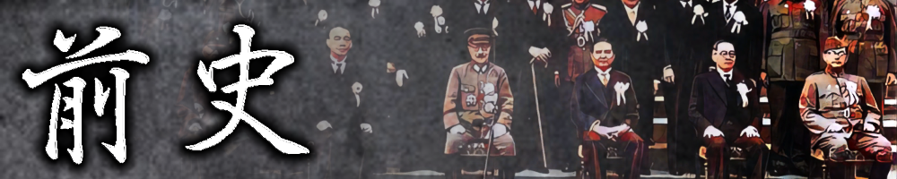

前史
| 年月日 | 出来事 | 説明 |
|---|---|---|
| 18**年**月**日 | 日米布条約（仮名） | ハワイ王国が大日本帝国へピヘマヌ島を、アメリカ合衆国へカラマ島を割譲した。 それぞれピヘマヌ島は中ノ鳥島に、カラマ島はジョンストン島に改称された。 |
| 1907年06月 | 水無月島発見 | 山田禎三郎が東京府小笠原島から560浬の位置に島嶼を発見したとされる。 この報告により、水無月島と名付けられ東京府小笠原支庁に編入された。 |
| 1936年09月26日 | 大粛清 | ソビエト社会主義共和国連邦でスターリンによる大粛清が始まる。 これにより1937年2月にブハーリンは亡命、5月にトゥハチェフスキーはシベリアに左遷されることとなる。 |
| 1936年12月12日 | 西安事件 | 中華民国の陝西省西安市にて張学良らによる蒋介石拉致監禁事件である。 この事件の影響で繆斌らは中国国民党を一時的に掌握することとなった。 |
| 1937年01月 | 有田・繆斌協定 | |
| 1937年02月 | 中華民国広州政府樹立 | 中華民国の広東省広州市にて汪兆銘らが中華民国広州政府を樹立する。 |
| 1937年07月07日 | 盧溝橋事件 支那事変 |
中華民国の北平市、盧溝橋にて大日本帝国と中華民国が偶発的衝突が発生する。 |
| 1937年10月 | 南京陥落 | 中華民国の南京が陥落する。中華民国は武漢を臨時首都として徹底抗戦を行う。 |
| 1941年10月05日 | ハル・ノート提示 | |
| 1941年12月08日 | 中ノ鳥島沖海戦 日米戦争 |
|
| 1941年12月14日 | ハワイ事変勃発 | ハワイ王国にて共和主義者らが蜂起し、内戦に突入する。 |
| 1942年04月01日 | 日英共同宣言 | イギリス領海峡植民地のシンガポールにて東條英機とチャーチルとの首脳会談にて共同宣言が発表される。 |
| 1942年05月08日 | ジョンストン島攻略作戦 ハワイ作戦 |
|
| 1942年08月15日 | フィリピン降伏 | |
| 1942年11月07日 | 南太平洋沖海戦 | |
| 1943年08月 | 8月事件 | 1943年8月5日から29日にかけてドイツ国にて発生した諸事件のことである。 |